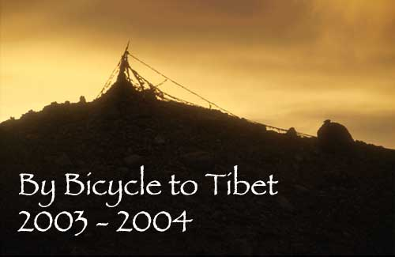

| |
| "Twenty
years from now, you will be more disappointed by the things you didn't
do than by the ones you did do. So throw off the bowlines. Sail away
from the safe harbour. Catch the trade winds in your sails. Explore.
Dream. Discover."
Mark Twain |
| |
| 
|
(Everest Base Camp, Tibet) |
Once started...For many years, I've been dreaming about a long bicycle tour. Travelling long enough to become completely immerged by cycling. In the past, my heartbeat always doubled while reading through travelogues from cyclists having done this before. Now I decided that there's no point in waiting, I just have to do it myself now. My journey started in September 2003 and led me through Eastern Europe, ending up with a detour through Greece. At the Bosporus, I left Europe and entered Asia. An early-winter ride across icy Anatolia was next. Escaping partly from the cold, I cycled through Georgia and Azerbaijan. In Iran, crossing the country from North to South and then back up again, I experienced very varied terrain. Central Asia began for me in the deserts of Turkmenistan and then slowly the high altitude mountain ranges of the Pamir in Tajikistan and Kyrgyzstan. Arrived in China, there was Kashgar, an once important hub of the Silk Road passing the Taklamakan Desert. Heading South through the desert, the Himalayan range was waiting for very tough climbs. A couple of 5000m passes will led through some of the highest and most desolate terrain on Earth, the Aksai Chin high plateau, ending up in Tibet. A rough and sand and gravel road lead all along the Himalaya range passing Holy Mt. Kailash and ending up at Mt. Everest Base Camp. From there the road dropped down over 4600m vertical meters to the lowlands of Nepal completing my journey. You can try to plan a bicycle tour as much as you want at home. But there was only one thing that was certain on the road: that nothing is certain. So my plans could have changed for all possible reasons... There lied the adventure of cycling. For pictures, travelogues and maps... here is an overview |